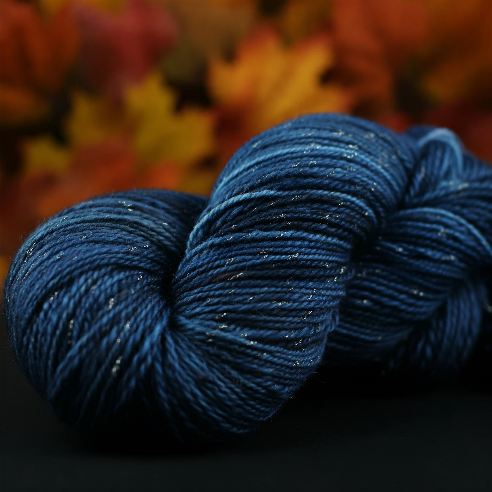
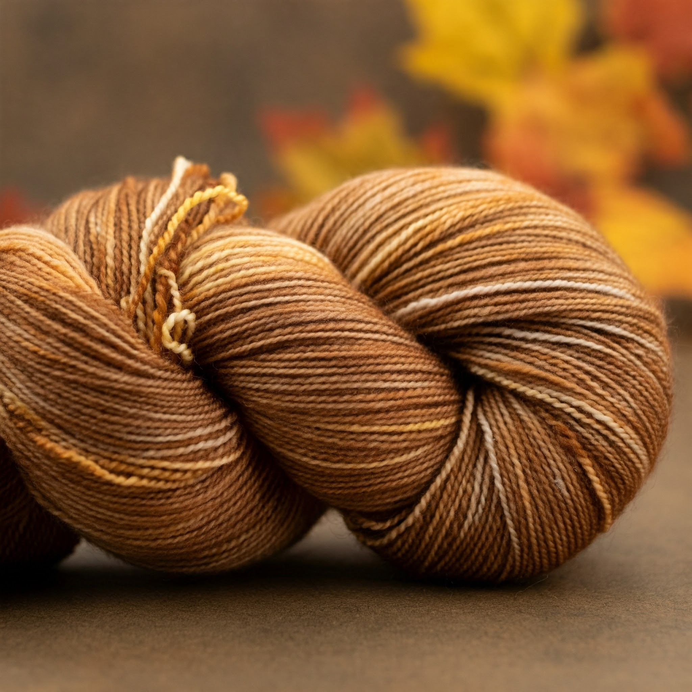
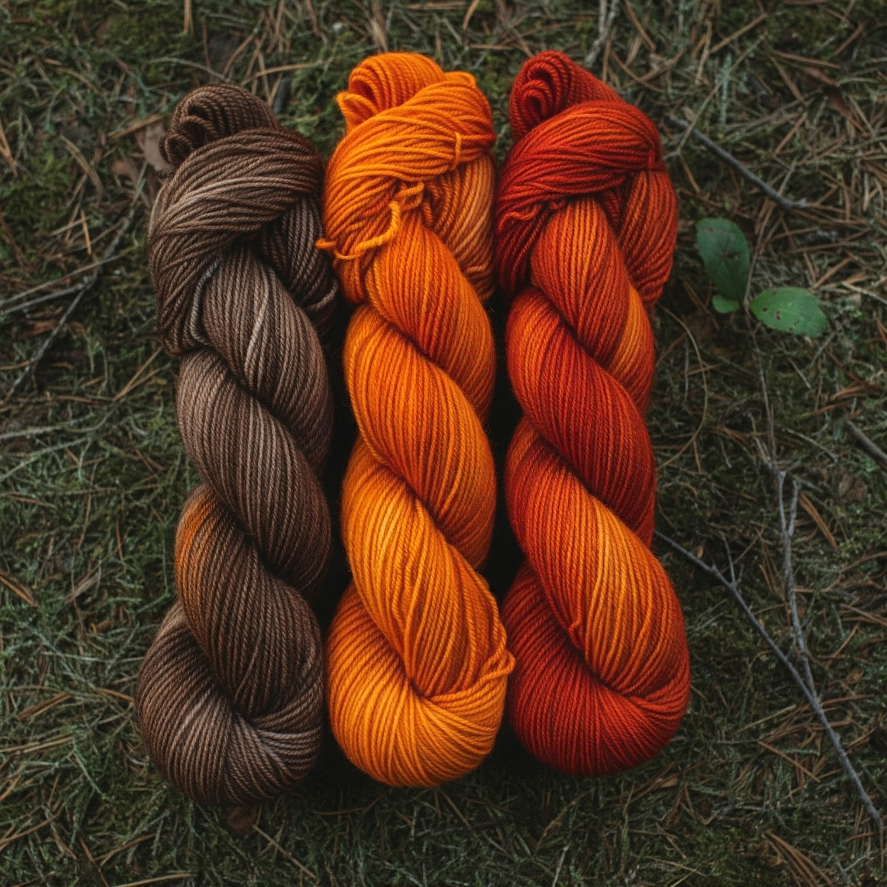

Yarn of the Week: Wayward Souls
Grow, tiny seed. You are called to the trees.
This deep, midnight blue yarn, flecked with silver, captures the essence of wandering through the darkness, searching for the light. Perfect for those seeking solace in their creations, as each stitch brings warmth and comfort to the lost and the meek.
Buy Wayward Souls About Wayward SoulsOur Autumn Collection
Potatoes and Molasses
A soft, warm brown yarn with flecks of creamy yellow, reminiscent of the comforting taste of potatoes and molasses. Ideal for cozy, homey projects that fill you with a sense of sweetness and nostalgia.
Buy Potatoes and Molasses About Potatoes and MolassesInto the Unknown
This yarn tells a story of transformation, with hues ranging from deep browns, reminiscent of fertile earth, to fiery oranges and reds, evoking the warmth of a crackling bonfire. It's perfect for projects that celebrate the beauty of autumn and the mysteries that lie within.
Buy Into the Unknown About Into the Unknown